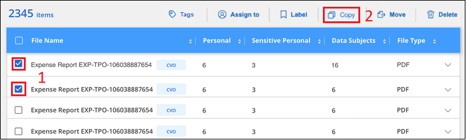
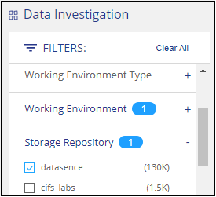

ドキュメントの変更をリクエスト
ドキュメントの変更をリクエスト GitHub で編集
GitHub で編集 寄稿者向けガイド
寄稿者向けガイドプライベートデータの管理
Cloud Data Sense は、プライベートデータを管理するためのさまざまな方法を提供します。一部の機能を使用すると、データの移行準備が簡単になります。また、他の機能を使用してデータを変更することもできます。
-
特定のデータのコピーを作成して別の NFS の場所に移動する場合は、デスティネーションの NFS 共有にファイルをコピーできます。
-
ONTAP ボリュームを新しいボリュームにクローニングしたり、選択したファイルだけをソースボリュームから新しいクローンボリュームに含めたりできます。これは、データを移行しているときに、元のボリュームから特定のファイルを除外する場合に便利です。
-
ソースリポジトリから特定の保存先にあるディレクトリにファイルをコピーして同期できます。これは、ソースファイルに最終的なアクティビティが残っている間に、あるソースシステムから別のソースシステムにデータを移行する場合に便利です。
-
データがスキャンしているソースファイルを任意の NFS 共有に移動できます。
-
安全でないようであるか危険すぎると思われるファイルを削除して、ストレージシステムに残すことも、重複として識別したファイルを削除することもできます。

|
|
ソースファイルをコピーしています
データがスキャンしているすべてのソースファイルをコピーできます。実行しようとしている処理に応じて、次の 3 種類のコピー処理があります。
-
* 同一または異なるボリュームまたはデータソースからデスティネーション NFS 共有にファイル * をコピーします。
これは、特定のデータのコピーを作成して別の NFS の場所に移動する場合に便利です。
-
* ONTAP ボリュームのクローンを同じアグリゲート内の新しいボリュームに作成します。新しいクローンボリュームには、ソースボリュームから選択されたファイルのみを含めます。
これは、データを移行する際に元のボリュームから特定のファイルを除外する場合に便利です。このアクションではを使用します "NetApp FlexClone" ボリュームをすばやく複製し、 * 選択しなかったファイルを削除する機能。
-
* 単一のソースリポジトリ（ ONTAP ボリューム、 S3 バケット、 NFS 共有など）から特定のデスティネーション（ターゲット）にあるディレクトリにファイルをコピーして同期します。
これは、あるソースシステムから別のシステムにデータを移行する場合に便利です。最初のコピーの後、設定したスケジュールに基づいて変更されたデータが同期されます。このアクションではを使用します "NetApp Cloud Sync の略" データをソースからターゲットにコピーおよび同期する機能。
ソースファイルを NFS 共有にコピーしています
データがスキャンしているソースファイルを任意の NFS 共有にコピーできます。NFS 共有をデータセンスと統合する必要はありません。選択したすべてのファイルが「 <host_name> ： /<share_path>` 」の形式でコピーされる NFS 共有の名前を知っておく必要があります。

|
データベースに存在するファイルはコピーできません。 |
-
ファイルをコピーするには、アカウント管理者またはワークスペース管理者の役割が必要です。
-
ファイルをコピーするには、デスティネーションの NFS 共有でデータセンスインスタンスからのアクセスが許可されている必要があります。
-
一度にコピーできるファイルの最大数は 100 、 000 です。
-
[ データ調査結果 ] ペインで、コピーするファイルを選択し、 [ * コピー ] をクリックします。
 ページからコピーするファイルを選択する方法と、 [ コピー ] ボタンを示すスクリーンショット。"]
-
個々のファイルを選択するには、各ファイル（
 ）。
）。 -
現在のページのすべてのファイルを選択するには、タイトル行（
 ）。
）。 -
すべてのページのすべてのファイルを選択するには、タイトル行（
）をクリックし、ポップアップメッセージにと入力します  をクリックし、リスト（ xxx 項目）のすべての項目を選択 * をクリックします。
をクリックし、リスト（ xxx 項目）のすべての項目を選択 * をクリックします。
-
-
_ ファイルのコピー _ ダイアログで * 標準コピー * タブを選択します。

-
選択したすべてのファイルをコピーする NFS 共有の名前を「 <host_name> ： /<share_path>` 」の形式で入力し、「 * Copy * 」をクリックします。
コピー処理のステータスを示すダイアログが表示されます。
コピー処理の進捗状況はで確認できます "[ アクションステータス（ Actions Status ） パネル"]。
ファイルのメタデータの詳細を表示するときに、個々のファイルをコピーすることもできます。[ ファイルのコピー ] をクリックします。
 ページのファイルのメタデータ詳細から [ ファイルのコピー ] ボタンを選択したことを示すスクリーンショット。"]
ページのファイルのメタデータ詳細から [ ファイルのコピー ] ボタンを選択したことを示すスクリーンショット。"]
新しいボリュームへのボリュームデータのクローニング
NetApp_FlexClone_functionality を使用すると、データセンスでスキャンしている既存の ONTAP ボリュームをクローニングできます。これにより、選択したファイルのみを含めて、ボリュームをすばやく複製できます。この機能は、データを移行する際に元のボリュームから特定のファイルを除外する場合や、テスト用にボリュームのコピーを作成する場合に便利です。
新しいボリュームは、ソースボリュームと同じアグリゲート内に作成されます。このタスクを開始する前に、アグリゲート内にこの新しいボリューム用の十分なスペースがあることを確認してください。必要に応じて、ストレージ管理者にお問い合わせください。
-
注： * FlexGroup ボリュームは FlexClone でサポートされていないため、クローンを作成できません。
-
ファイルをコピーするには、アカウント管理者またはワークスペース管理者の役割が必要です。
-
選択したファイルはすべて同じボリュームにあり、ボリュームがオンラインである必要があります。
-
ボリュームは、 Cloud Volumes ONTAP またはオンプレミスの ONTAP システムから選択する必要があります。他のデータソースは現在サポートされていません。
-
クラスタに FlexClone ライセンスがインストールされている必要があります。このライセンスは、 Cloud Volumes ONTAP システムにデフォルトでインストールされます。
-
[ データ調査 ] ペインで、 1 つの * 作業環境 * と 1 つの * ストレージリポジトリ * を選択してフィルタを作成し、すべてのファイルが同じ ONTAP ボリュームにあることを確認します。

新しいボリュームにクローニングするファイルだけが表示されるように、他のフィルタを適用します。
-
［ 調査結果 ］ ペインで、複製するファイルを選択し、 ［ * コピー * ］ をクリックします。
ページからコピーするファイルを選択する方法と、 [ コピー ] ボタンを示すスクリーンショット。"]
-
個々のファイルを選択するには、各ファイル（
）。 -
現在のページのすべてのファイルを選択するには、タイトル行（
）。 -
すべてのページのすべてのファイルを選択するには、タイトル行（
）をクリックし、ポップアップメッセージにと入力します をクリックし、リスト（ xxx 項目）のすべての項目を選択 * をクリックします。
-
-
_ ファイルのコピー _ ダイアログで * FlexClone * タブを選択します。このページには、ボリュームからクローニングされるファイル（選択したファイル）の総数と、クローンボリュームに含まれている / 削除されていないファイル（選択しなかったファイル）の数が表示されます。

-
新しいボリュームの名前を入力し、 * FlexClone * をクリックします。
クローン処理のステータスを示すダイアログが表示されます。
新しいクローンボリュームは、ソースボリュームと同じアグリゲート内に作成されます。
クローニング処理の進捗状況はで確認できます "[ アクションステータス（ Actions Status ） パネル"]。
ソースボリュームが存在する作業環境で Data Sense を有効にしたときに、最初に「すべてのボリュームをマップ」または「すべてのボリュームをマップして分類」を選択した場合は、新しいクローンボリュームが自動的にスキャンされます。最初にこれらのいずれかを使用しなかった場合は、この新しいボリュームをスキャンする必要があります "ボリュームのスキャンを手動で有効にします"。
ソース・ファイルをターゲット・システムにコピーして同期する
データがスキャンしているソースファイルを、サポートされていない非構造化データソースから特定のターゲットの場所にあるディレクトリにコピーできます ("Cloud Sync でサポートされるターゲットの場所"）。最初のコピー後、ファイル内で変更されたデータは、設定したスケジュールに基づいて同期されます。
これは、あるソースシステムから別のシステムにデータを移行する場合に便利です。このアクションではを使用します "NetApp Cloud Sync の略" データをソースからターゲットにコピーおよび同期する機能。
|
|
データベース、 OneDrive アカウント、 SharePoint アカウントにあるファイルはコピーおよび同期できません。 |
-
ファイルをコピーして同期するには、アカウント管理者またはワークスペース管理者の役割が必要です。
-
選択したファイルはすべて、同じソースリポジトリ（ ONTAP ボリューム、 S3 バケット、 NFS 共有、 CIFS 共有など）にある必要があります。
-
Cloud Sync サービスをアクティブ化し、少なくとも 1 つのデータブローカーを構成して、ソースシステムとターゲットシステム間でファイルを転送できるようにする必要があります。から、 Cloud Sync の要件を確認します "Quick Start 概要 の略"。
Cloud Sync サービスでは同期関係のサービス料金が別途請求されるため、データブローカーをクラウドに導入するとリソース料金が発生することに注意してください。
-
[ データの調査 ] ペインで、 1 つの * 作業環境 * と 1 つの * ストレージリポジトリ * を選択してフィルタを作成し、すべてのファイルが同じリポジトリにあることを確認します。
他のフィルタを適用して、コピー先システムに同期するファイルだけが表示されるようにします。
-
[ 調査結果 ] ウィンドウ枠で、タイトル行のボックスをオンにして、すべてのページのすべてのファイルを選択します（
）をクリックし、ポップアップメッセージに入力します [ リスト内のすべての項目を選択（ * xxx 項目） ] をクリックし、 [ * コピー * ] をクリックします。 ページからコピーするファイルを選択する方法と、 [ コピー ] ボタンを示すスクリーンショット。"]
ページからコピーするファイルを選択する方法と、 [ コピー ] ボタンを示すスクリーンショット。"] -
_ ファイルのコピー _ ダイアログで * 同期 * タブを選択します。
 ダイアログを示すスクリーンショットで、 [ 同期 ] オプションを選択できます。"]
ダイアログを示すスクリーンショットで、 [ 同期 ] オプションを選択できます。"] -
選択したファイルを保存先に同期してもよい場合は、「 * OK * 」をクリックします。
Cloud Sync UI が Cloud Manager で開きます。
同期関係を定義するよう求められます。ソースシステムは、データセンスで選択したリポジトリとファイルに基づいてあらかじめ設定されています。
-
ターゲットシステムを選択し、使用するデータブローカーを選択（または作成）する必要があります。から、 Cloud Sync の要件を確認します "Quick Start 概要 の略"。
ファイルはターゲットシステムにコピーされ、定義したスケジュールに基づいて同期されます。1 回限りの同期を選択した場合、ファイルは 1 回だけコピーされ、同期されます。定期的な同期を選択した場合は、スケジュールに基づいてファイルが同期されます。フィルタを使用して作成したクエリに一致する新しいファイルがソースシステムによって追加されると、これらの _new_files がコピー先にコピーされ、後で同期されることに注意してください。
通常の Cloud Sync 操作の一部は、 Data Sense から呼び出されたときに無効になっている点に注意してください。
-
「ソース上のファイルを削除」または「ターゲット上のファイルを削除」ボタンは使用できません。
-
レポートの実行が無効になっています。
ソースファイルを NFS 共有に移動しています
データがスキャンしているソースファイルを任意の NFS 共有に移動できます。NFS 共有をデータセンスと統合する必要はありません（を参照） "ファイル共有をスキャンしています"）。
|
|
データベースに存在するファイルは移動できません。 |
ファイルを移動するには、アカウント管理者またはワークスペース管理者の役割が必要です。
ファイルを移動するには、 NFS 共有でデータセンスインスタンスからのアクセスが許可されている必要があります。
-
[ データ調査結果 ] ペインで、移動するファイルを選択します。
 ページから [ 移動 ] ボタンをクリックします。"]
ページから [ 移動 ] ボタンをクリックします。"]-
個々のファイルを選択するには、各ファイル（
）。 -
現在のページのすべてのファイルを選択するには、タイトル行（
）。
-
-
ボタンバーで、 * 移動 * をクリックします。

-
_ ファイルの移動 _ ダイアログで ' 選択したすべてのファイルを移動する NFS 共有の名前を '< ホスト名 >:/<share_path>' の形式で入力し ' * ファイルの移動 * をクリックします
ファイルのメタデータの詳細を表示するときに、個々のファイルを移動することもできます。「 * ファイルを移動 * 」をクリックします。
 ページのファイルのメタデータ詳細から [ ファイルの移動 ] ボタンを選択したことを示すスクリーンショット。"]
ページのファイルのメタデータ詳細から [ ファイルの移動 ] ボタンを選択したことを示すスクリーンショット。"]
ソースファイルを削除しています
ストレージ・システムに残すのに安全でない ' またはリスクが高すぎるソース・ファイルを完全に削除したり ' 重複として識別したソース・ファイルを削除したりすることができますこの操作は永続的であり、元に戻すことも復元することもできません。
［ 調査 ］ ペインから手動でファイルを削除することも、 ［ ポリシー ］ を使用して自動的にファイルを削除することもできます
|
|
データベースに存在するファイルは削除できません。 |
ファイルを削除するには、次の権限が必要です。
-
NFS データ–書き込み権限でエクスポートポリシーを定義する必要があります。
-
CIFS データ– CIFS クレデンシャルには書き込み権限が必要です。
-
S3 データの場合 - IAM ロールに次の権限を含める必要があります。「 3 ： DeleteObject 」
ソースファイルを手動で削除しています
-
ファイルを削除するには、アカウント管理者またはワークスペース管理者の役割が必要です。
-
一度に削除できるファイルの最大数は 100 、 000 です。
-
[ データ調査結果 ] ペインで、削除するファイルを選択します。
 ページの [ 削除 ] ボタン。"]
ページの [ 削除 ] ボタン。"]-
個々のファイルを選択するには、各ファイル（
）。 -
現在のページのすべてのファイルを選択するには、タイトル行（
）。 -
すべてのページのすべてのファイルを選択するには、タイトル行（
）をクリックし、ポップアップメッセージにと入力します をクリックし、リスト（ xxx 項目）のすべての項目を選択 * をクリックします。
-
-
ボタンバーで、 * 削除 * をクリックします。
-
削除操作は永続的であるため ' 後続の _Delete File_Dialog に「 * permanently delete * 」と入力し ' * ファイルの削除 * をクリックする必要があります
削除処理の進捗状況はで確認できます "[ アクションステータス（ Actions Status ） パネル"]。
ファイルのメタデータの詳細を表示するときに、個々のファイルを削除することもできます。[ ファイルの削除 ] をクリックします。
 ページのファイルのメタデータ詳細から [ ファイルの削除 ] ボタンを選択したことを示すスクリーンショット。"]
ページのファイルのメタデータ詳細から [ ファイルの削除 ] ボタンを選択したことを示すスクリーンショット。"]
ポリシーを使用してソースファイルを自動的に削除します
カスタムポリシーを作成して、ポリシーに一致するファイルを削除できます。たとえば、過去 30 日間にデータセンスで検出された機密情報を含むファイルを削除できます。
ファイルを自動的に削除するポリシーを作成できるのはアカウント管理者だけです。
|
|
ポリシーに一致するすべてのファイルは、 1 日に 1 回完全に削除されます。 |
-
[ データ調査 ] ページで、使用するすべてのフィルタを選択して検索を定義します。を参照してください "[ データ調査 ページでデータをフィルタリングします"^] を参照してください。
-
必要な方法でフィルタ特性をすべて設定したら、 [ この検索からポリシーを作成する *] をクリックします。
-
ポリシーに名前を付け、そのポリシーで実行できるその他のアクションを選択します。
-
一意の名前と説明を入力します。
-
このポリシーに一致するファイルを自動的に削除する ] チェックボックスをオンにし、「 * permanently delete * 」と入力して、このポリシーによってファイルが完全に削除されることを確認します。
-
[ ポリシーの作成 *] をクリックします。

-
[ ポリシー ] タブに新しいポリシーが表示されます。ポリシーに一致するファイルは、ポリシーの実行時に 1 日に 1 回削除されます。
で削除されたファイルのリストを確認できます "[ アクションステータス（ Actions Status ） パネル"]。